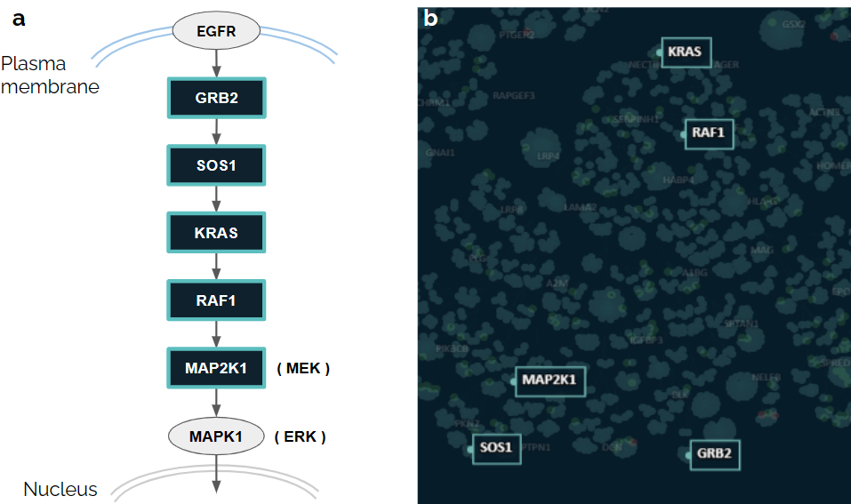

Cell Blueprint User Guide
Introduction
Interactome Networks
Cells, the building blocks of life, are one of the most complex naturally occurring entities. Any given cell may be undergoing millions of biological processes, signalling cascades, chemical and cellular interactions at any given moment in time. In healthy cells, all of these processes must work in perfect symphony to ensure normal cell function. Yet, deviations within such cellular networks, whether spurred by mutations or external stimuli, can drive cells towards pathological states and ultimately disease. Deciphering these complex mechanisms has historically posed challenges for scientists. However, DeepLife’s Cell Blueprint emerges as a beacon of clarity amidst the tangled web of cellular interactions, offering a paradigm shift in cellular interactome visualisation.
Limitations of classical network visualisation approaches
The default molecular interaction network displayed on the Cell Blueprint is based on DeepLife’s proprietary human interactome. Classically, interactome networks are represented with nodes, which represent genes, proteins, or other molecules; and edges, which represent connections or interactions between nodes. In classical network visualisation approaches, nodes are typically depicted with a shape such as a circle, and interactions are represented by lines (edges) between these nodes.
Although intuitive, classical approaches have two key limitations, particularly with regard to increasing network complexity:
- Since the positioning of edges is arbitrary, they can frequently overlap with each other, which obfuscates the paths of individual links and creates large numbers of meaningless intersections between edges.
- In classical representation approaches, edges can also intersect with multiple nodes, even where a true interaction does not exist, causing ambiguity in interpretation.
Unless mitigated, these limitations can give rise to so-called “interaction hairballs” in representations of interactome networks, where increasing network complexity corresponds to decreasing ease of interpretation (Figure 1a).
Figure 1. Schematic representation of the Cell Blueprint layout construction.
a. Starting interaction “hairball”. A particular node and its interactions are highlighted in blue. The partners of the highlighted nodes are shown in black filling. In this representation, interpretation can be challenging as a result of large numbers of overlapping nodes and edges.
b. Visual representation of the hierarchical community detection, reminiscent of dendrograms. The original highlighted interactions are represented as passing through the hierarchy branches.
c. Conversion of the hierarchical clustering branches into graph edges.
d. Final Cell Blueprint layout. The original highlighted interactions are represented as passing through “conduits”.
The Cell Blueprint Layout
Hierarchical Clustering
Interaction hairballs are too dense for easy interpretation. In DeepLife Cell Blueprint, the first step taken towards a clearer visual representation is to run a hierarchical community detection algorithm on the network. The result of such clustering shares similarities with dendrograms typically used in evolutionary biology (Figure 1b). However, instead of clustering based on genetically similar organisms, here we hierarchically cluster genes and proteins based on their interactions. Groups of nodes that are tightly interconnected are clustered together, breaking up the dense interactome network into communities. The original molecular interaction can then be drawn as passing through the hierarchical clustering branches (Figure 1b).
Conduits and virtual nodes
Next, we create a virtual node to represent each cluster & subcluster, (equivalent to a cluster “branch point” on a dendrogram), along with new edges that link each parent virtual node to its children in the hierarchy. Edges corresponding to the original interactions are also added when both interacting partners are found within the same subcluster at the very end of the hierarchy.
The edges that link virtual nodes are called “Conduits” (Figure 1c). Conduits are then used to draw the original interactions as passing through them (Figure 2). Conduits, as such, contain all the individual edges that link real nodes within one cluster to those in another cluster. Conceptually, bundling edges into conduits can be thought of as grouping individual wires together within a main cable, where the wires represent edges (Figure 2). In practice, this significantly decreases edge overlap within the Cell Blueprint, enabling clearer and more straightforward interpretation of interactions of interest. At each end of a conduit lies a different node cluster, where individual edges split back out to connect to their respective nodes.
Figure 2. Edges within conduits can be thought of as wires within a cable (see inset).
Force-Directed layout
To spread the interactome nodes in two-dimensional space and yield the characteristic Cell Blueprint layout, we apply a force-directed layout algorithm, which results in nodes repelling each other akin to charged particles. Virtual nodes are then removed from the final visualisation, leaving only conduits, nodes, and individual edges. (Figure 1d).
Functional significance of the Cell Blueprint layout
Mapping canonical pathways
While the Cell Blueprint layout clustering is solely based on molecular interactions, it recapitulates known functional gene groups and pathways to some extent. Genes that participate together in given biological processes will often cluster in the same areas of the layout. For instance, genes from the Ras/Raf pathway are concentrated within a main cluster when mapped on the Cell Blueprint (Figure 3).
